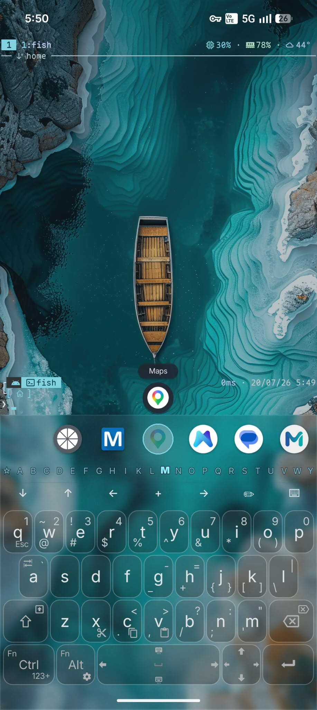
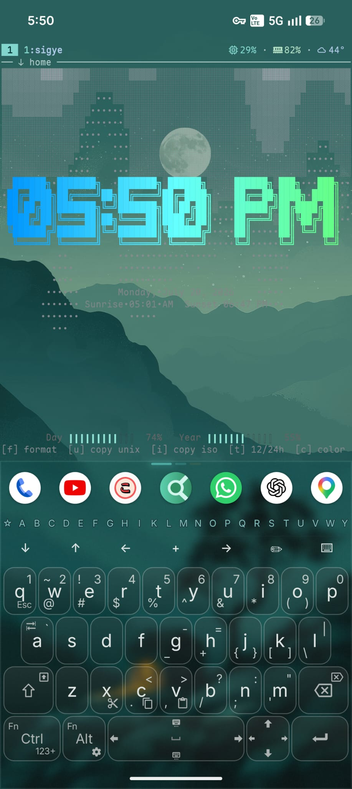
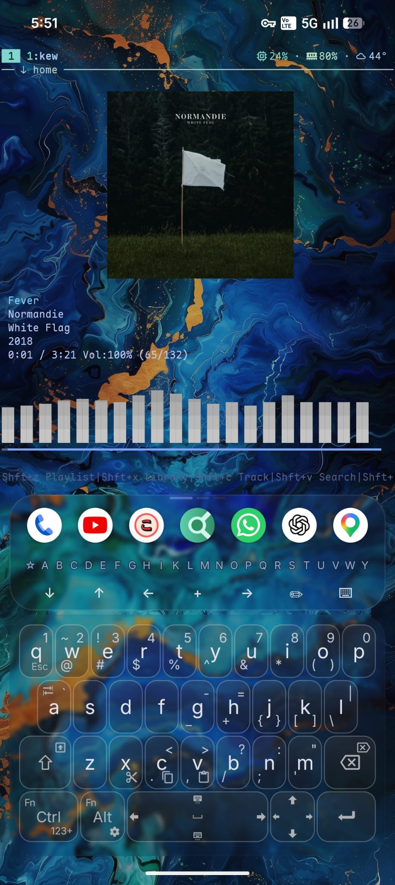
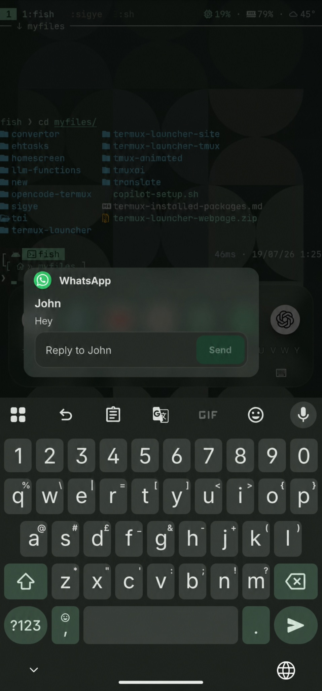
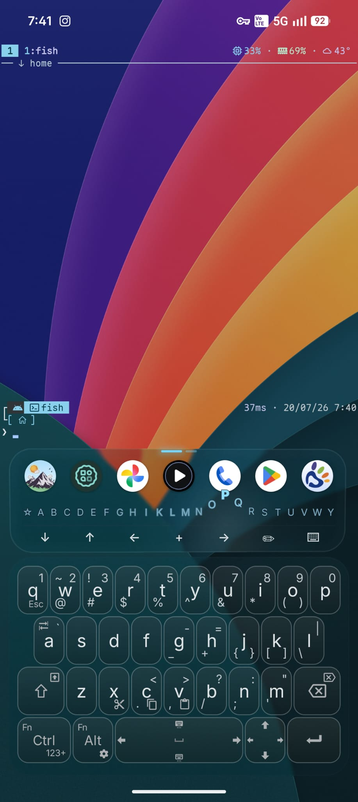
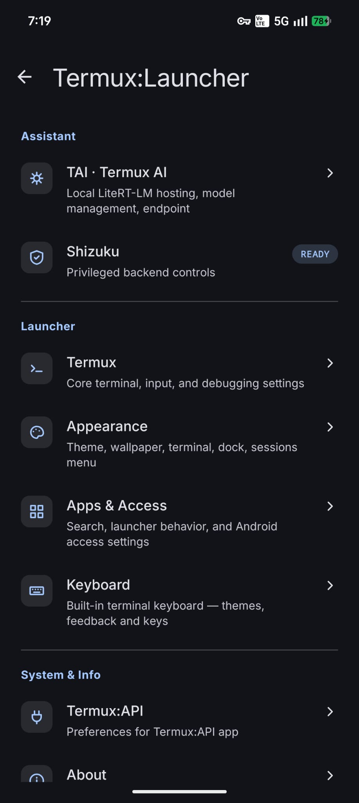

com.termux
Termux edition
Official Termux package ecosystem and timely updates. All four Android ABIs. Cannot be installed alongside official Termux.
Releases · latest ↗





On top of official Termux 10 additions
Sixel + Kitty graphics, Kitty fonts and shaping, animated cursor, TUI-aware touch
Sessions, windows, panes, floating panes, pinch zoom per pane
Sessions, real CPU & RAM, weather, a slide-down clock and widgets page
Every launcher action - swipe up on the space bar and type
Julow's Unexpected Keyboard built in, custom layouts included
Answer a notification without opening the app
Pin what you use, search the rest, clones and work profiles included
Wallpaper colours across launcher surfaces and the shell
Optional - detailed system stats, process labels, power-button lock
Google LiteRT and Alibaba MNN, over an OpenAI/Ollama-compatible API
What it actually is
It starts from Termux and makes it the thing your home button opens. pkg, the repos and everything you know keep working.
On top: a multiplexer with pinch zoom per pane, Sixel and Kitty graphics, and a command palette that reaches every launcher feature.
And it stays a launcher: dock and drawer, quick replies from the terminal, Material colours from your wallpaper, local models over an OpenAI-compatible API.
Install one APK
You only need the Main APK to try it — on first launch it downloads its bootstrap packages. Termux:API and Termux:Styling are optional; if you use either, take the one matching your edition, since Android rejects mismatched signatures. Styling is largely unnecessary anyway — fonts and colors are handled in-app.
Official Termux package ecosystem and timely updates. All four Android ABIs. Cannot be installed alongside official Termux.
Releases · latest ↗The entire nixpkgs collection, declarative configs and rollbacks, side by side with official Termux. arm64-v8a and x86_64. Companions: TLNix:API · TLNix:Styling.
Releases · v0.2.35-a-nix ↗Runs off a manually compiled package repo that is not updated anymore — at most consider it a demo of the launcher, not for daily use. Installs alongside official Termux. arm64-v8a only.
Deprecated · VAJ → Nix migration guide